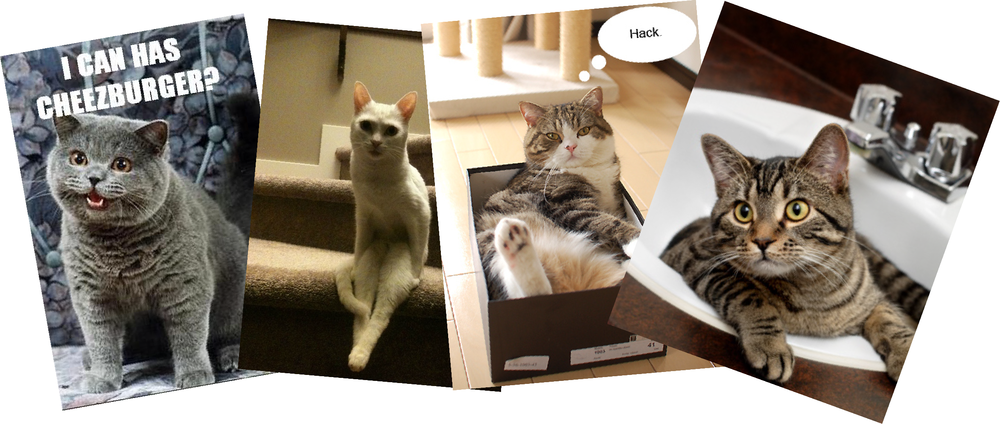

Machine Learning for JavaScript Hackers
Machine Learning
for JavaScript Hackers
Machine Learning
Solves tasks that people are good at,
but traditional computation is bad at.
Examples
- face detection
- spam filtering
- recommendation systems
- character recognition
traditional computing:
Hand-chosen conditionals and params.
ML algorithms:
Rules are learned from data
Training
- Learn rules by training on labelled data
- same algorithm, different data
- generic = power
The problem
Should I bother?...
Does it have any cat pics?
???
Breaking it down
does this image contain a cat?
Breaking it down
is this subsection a cat head?
We need a classifier
- Takes a piece of data, tells you which class it's in.
- Trained with known classifications
- Bayesian (spam), k-nearest neighbors, support vector machines,
neural networks.
neural networks
function runNetwork(input) {
var net = {"layers":[{"0":{},"1":{}},{"0":{"bias":5.1244897557632765,"weights":{"0":-3.591317000303657,"1":-3.594502936141513}},"1":{"bias":1.4480619514263766,"weights":{"0":-5.021099423700753,"1":-5.055736046304716}},"2":{"bias":0.655017127607016,"weights":{"0":-3.9842614825641096,"1":-4.020357237374914}}},{"0":{"bias":-3.093322979654723,"weights":{"0":7.328941033927063,"1":-5.699647431673055,"2":-3.879799253666414}}}]};
for (var i = 1; i < net.layers.length; i++) {
var layer = net.layers[i];
var output = {};
for (var id in layer) {
var node = layer[id];
var sum = node.bias;
for (var iid in node.weights) {
sum += node.weights[iid] * input[iid];
}
output[id] = (1 / (1 + Math.exp(-sum)));
}
input = output;
}
return output;
}
Not going to go into how it works, but these floating point values are trained.
Optimization problem, try to find floating point values that minimize the error in the training set.
input and output
net.train([
{ input: [0.7, 0.1, 0.3], output: [1] },
{ input: [1.0, 0.8, 0.7], output: [0] },
{ input: [0.5, 0.6, 0.7], output: [0] }
]);
var output = net.run([0.5, 0.5, 0.6]); // [0.001]
- output is
[1] if cat, [0] if not
- input is
[?, ?, ?, ...]
What is the input?
too much variation
leaves shape information
want to make it easy on the network, giving it data
it can get a better handle on, data that doesn't vary too much
Histogram of Oriented Gradients
- Captures strength + direction of edges
- Pixels → array of #s from
0 to 1
perfect!
48x48 canvas → HOG of length 1176
Collection
- negatives:
1000s of cat-free crops
- positives:
1000s of cat head crops
-
resize to
48x48
-
node-canvas
Training
var hog = require("hog-descriptor");
var brain = require("brain");
var data = pics.map(function(pic) {
return {
input: hog.extractHOG(pic.canvas),
expected: [pic.cat ? 1 : 0]
}
})
var net = new brain.NeuralNetwork();
net.train(data);
Is this subsection a cat head?
function isCat(canvas) {
var features = hog.extractHOG(canvas);
var prob = net.run(features);
return prob > 0.9;
}
Does this image contain a cat?
- Test "windows" at different scales, locations
- Combine overlapping detections
- Weed out spurious detections
Demo
http://harthur.github.com/kittydar
Not As Fun
- Weak typing / implicit conversions
NaN...0/0
or undefined + 7?
-
worse:
Math.abs(null) = 0 silent destruction
- Speed
not that bad
- Lack of building blocks